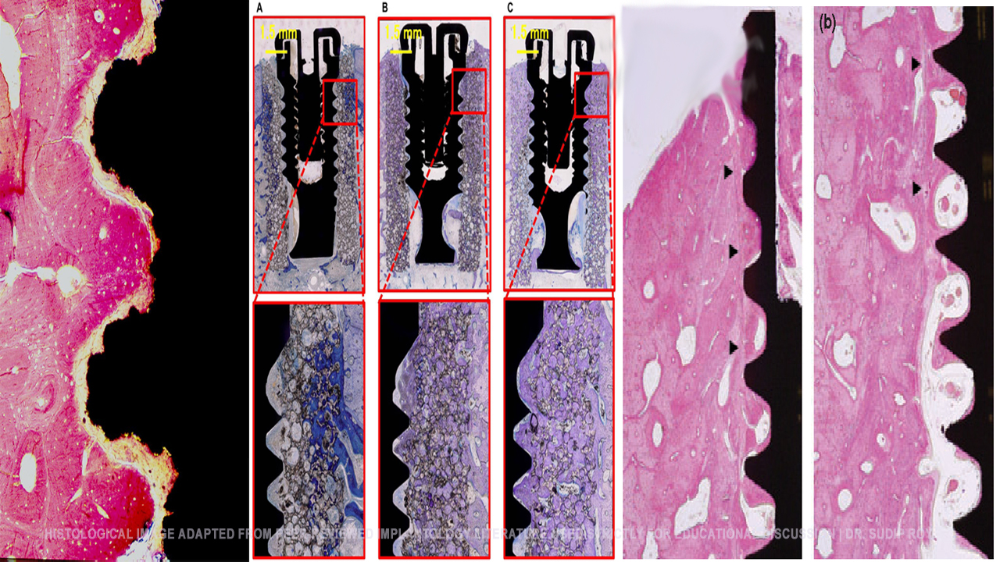

A Quiet Thought from Daily Clinical Practice
আমার ২৭ বছরের ক্লিনিক্যাল প্র্যাকটিসে প্রতিদিন একটি বিষয় ভাবি। আমরা আজকাল "Next-Gen" ইমপ্ল্যান্ট সম্পর্কে অনেক কিছু শুনি—দ্রুত হিলিং (faster healing), তাৎক্ষণিক লোডিং (immediate loading), নতুন সারফেস।
তাই আমি এই আর্টিকেলটি লেখার সিদ্ধান্ত নিলাম। উদ্দেশ্য হলো, ইমপ্ল্যান্ট কোম্পানিগুলোর বিজ্ঞাপন এবং প্রমোশনাল দাবির বাইরে গিয়ে বিজ্ঞান আসলে কী বলছে, তা পরিষ্কার করা। এটি ইমপ্ল্যান্টের বিরুদ্ধে কোনো লেখা নয়; এটি রোগী এবং ডেন্টিস্টদের জন্য একটি বায়োলজি-ফার্স্ট (biology-first), প্রমাণ-ভিত্তিক আলোচনা।
কেন ‘Next-Gen Dental Implants’ দীর্ঘমেয়াদে ব্যর্থ হচ্ছে?
নতুন ইমপ্ল্যান্ট প্রযুক্তি কি সত্যিই নির্ভরযোগ্য? তথাকথিত “Next-Gen” implant surface, osseointegration failure ও long-term scientific evidence নিয়ে একটি গভীর আলোচনা।
🌱 কেন এই আর্টিকেলটি পড়া জরুরি? (Why this matters)
❗ This is NOT an anti-implant article. এটি একটি science-first, evidence-based educational article। এই লেখাটি তৈরি করা হয়েছে:
- 👨👩👧👦 রোগীদের জন্য: যেন তারা সঠিক তথ্য জেনে সিদ্ধান্ত (informed decision) নিতে পারেন।
- 📖 সাধারণ পাঠকদের জন্য: যেন তারা মার্কেটিং হাইপ (marketing hype) আর মেডিকেল সায়েন্সের পার্থক্য বুঝতে পারেন।
- 🦷 সহকর্মী ডেন্টিস্টদের জন্য: যেন আমরা বিজ্ঞাপনের চটকদার অফারের বাইরে গিয়ে বিজ্ঞানকে অগ্রাধিকার দিই।
👉 Dental implants can be excellent—when used correctly.
👉 But not every “new” implant is better.
👉 And not every patient actually needs an implant.
🦴 Osseointegration: একমাত্র সত্যিকারের ভিত্তি
Osseointegration মানে হলো জীবন্ত হাড় (Living Bone) ও ইমপ্ল্যান্টের মধ্যে দীর্ঘমেয়াদী, স্থিতিশীল ও প্রদাহহীন সংযোগ। এটি কোনো যান্ত্রিক সংযোগ নয়, এটি একটি জৈবিক প্রক্রিয়া।

ডেন্টাল ইমপ্ল্যান্টোলজির জনক Per-Ingvar Brånemark বলেছিলেন:
“Let biology decide the speed.” (শরীরের জীববিজ্ঞানের ওপর গতি নির্ধারণ করতে দিন।) 🧬
কিন্তু আজ হাড়ের হিলিং প্রসেসকে উপেক্ষা করে Marketing Timeline অনুযায়ী ইমপ্ল্যান্ট তৈরি হচ্ছে।
⚠️ সমস্যা কোথায় হচ্ছে? (Evidence-Based Analysis)
১. অতিরিক্ত সারফেস ট্রিটমেন্ট (Over-aggressive Surface Treatment)
দ্রুত হাড় জোড়া লাগানোর জন্য ইমপ্ল্যান্টের গায়ে অতিরিক্ত কেমিক্যাল কোটিং বা রাফনেস (Roughness) তৈরি করা হয়। এটি শুরুতে হাড়ের সংযোগ ঘটালেও, দীর্ঘমেয়াদে এটি অনেক সময় Local Inflammation (প্রদাহ) বাড়াতে পারে।
📚 Evidence: Wennerberg & Albrektsson (Clinical Oral Implants Research)
২. সার্জিক্যাল ভুলের কারণে ব্যর্থতা (Surgical Fundamentals)
হাড় ড্রিল করার সময় তাপমাত্রা 47°C-এর বেশি হলে হাড়ের কোষগুলো স্থায়ীভাবে ক্ষতিগ্রস্ত হয়। সঠিক osteotomy টেকনিক না হলে ইমপ্ল্যান্ট ব্যর্থ হওয়ার সম্ভাবনা বেড়ে যায়।
📚 Evidence: Eriksson & Albrektsson (J Prosthet Dent)
🧠 রোগীদের জন্য পরামর্শ (Important for Patients)
Dental implant is ONE option—not the only option.
অনেক ক্ষেত্রে Fixed bridge বা Conservative treatment আপনার জন্য বেশি নিরাপদ এবং সাশ্রয়ী হতে পারে, বিশেষ করে যদি আপনার হাড়ের ঘনত্ব কম থাকে বা অনিয়ন্ত্রিত ডায়াবেটিস থাকে।
তাই নিজেকে প্রশ্ন করুন: Do You Really Need an Implant?
🧭 সমাধান কোথায়?
সমাধান হলো Biology-First Implantology। আমাদের ফিরে যেতে হবে দীর্ঘমেয়াদী ক্লিনিক্যাল গবেষণায় (১০-১৫ বছরের ডেটা), বিজ্ঞাপনের ৬ মাসের ডেটায় নয়।
আমার মূলমন্ত্র: “শুনুন, পর্যবেক্ষণ করুন, চিন্তা করুন—তারপর কাজ করুন।”
❓ শেষ প্রশ্ন
“এটা কি শুধুই নতুন (Next-Gen)? নাকি সত্যিই উন্নততর (Better for long-term health)?”
কারণ রোগীর হাড়ের সাথে দীর্ঘমেয়াদে টিকে থাকার লড়াইয়ে— 📢 বিজ্ঞাপন নয়, 🔬 কেবল বিজ্ঞানই জেতে।
📚 Key Scientific References
- Eriksson AR, Albrektsson T. Temperature threshold levels for heat-induced bone injury. J Prosthet Dent 1983.
- Albrektsson T et al. Criteria of success for dental implants. Int J Oral Maxillofac Implants 1986.
- Wennerberg A, Albrektsson T. Effects of surface topography on bone integration. Clin Oral Implants Res 2009.